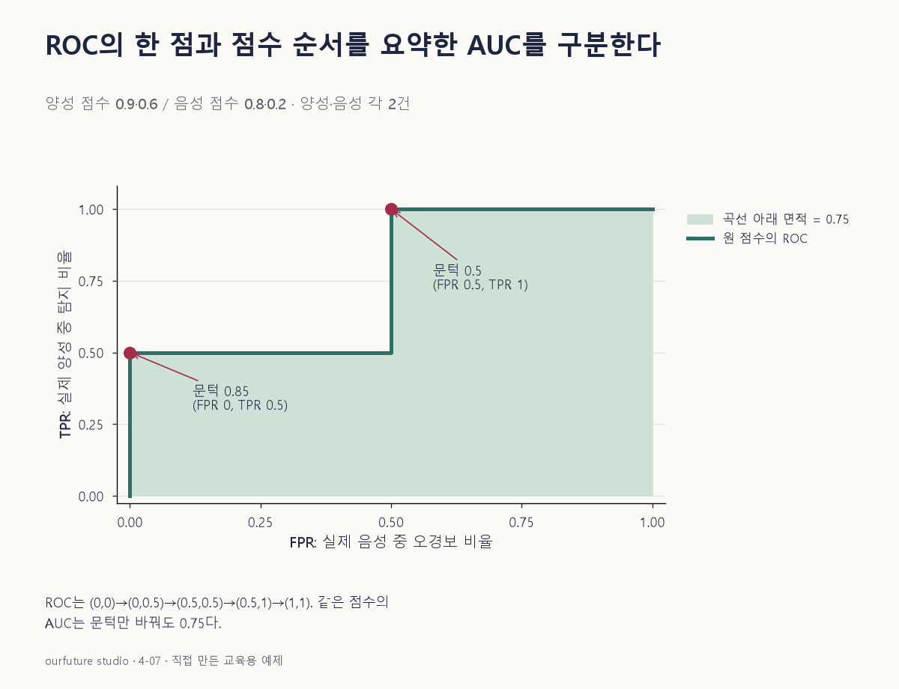

핵심 이론
이진 분류에서 양성일수록 큰 점수를 준다고 정한다. 임곗값 이상을 양성으로 판정하면 실제 양성 중 찾은 비율 TPR=TP/(TP+FN), 실제 음성 중 잘못 경고한 비율 FPR=FP/(FP+TN)이 정해진다. ROC의 가로축은 FPR, 세로축은 TPR다. 임곗값을 낮추면 양성으로 판정되는 사례가 늘어나므로 두 비율이 함께 증가하거나 유지될 수 있다. 한 혼동행렬은 곡선 전체가 아니라 한 임곗값의 점을 준다.
ROC-AUC는 이 점수의 순서가 양성과 음성을 얼마나 구분하는지 나타낸다. 양성 하나와 음성 하나의 모든 쌍에서 양성 점수가 더 높은 비율로도 계산할 수 있고, 동점은 보통 반으로 센다. 확률뿐 아니라 방향이 맞는 임곗값 이전 결정 점수도 사용할 수 있다. 정답 클래스가 모두 한 종류뿐이면 이진 ROC 평가에 필요한 비교 집합이 사라지며, 소프트웨어의 클래스 순서와 양성 기준도 반드시 확인한다.
AUC가 높다고 예측확률이 잘 보정되었다거나 현재 임곗값의 정밀도가 높다는 뜻은 아니다. 같은 순서를 유지하는 점수 변환은 AUC를 유지하지만 확률의 해석은 바꿀 수 있다. 드문 양성을 찾는 실제 결정에는 허용 오경보와 재현율 등 특정 운용 지점의 조건도 필요하다. 라벨0·1만 넣어 한 점의 정보를 넘기면 원래 연속 점수가 가졌던 세부 순서를 잃는다.
작은 예제로 확인하기
기존 ML15의 별도 자체4건 순위 예제를 연결한다. 실제 양성 점수는0.9·0.6, 음성 점수는0.8·0.2이며 동점이 없다.
| 양성 점수 | 비교 음성0.8 | 비교 음성0.2 |
|---|---|---|
| 0.9 | 높음 | 높음 |
| 0.6 | 낮음 | 높음 |
총4쌍 중3쌍에서 양성 점수가 높으므로 AUC=3/4=0.75다. 임곗값0.5에서는 TPR=1·FPR=0.5이고,0.85에서는 TPR=0.5·FPR=0이다. 판정 지점은 달라지지만 같은4건 점수의 AUC는 여전히0.75다. 양성 0.6만 0.8로 바꾸면 음성 0.8과 동점이 한 쌍 생긴다. 양성 0.9의 승리 두 쌍, 양성 0.8의 승리 한 쌍과 동점 반 쌍을 더해 AUC는 3.5/4=0.875다. 임곗값만 바꿨을 때와 실제 점수 순서를 바꿨을 때를 구분한다.
그림으로 확인하기

직접 고르기
이진 평가 4건이다. 양성 점수는 0.9·0.6, 음성 점수는 0.8·0.2다. 높을수록 양성이며 동점은 없다.
이 점수의 ROC-AUC는?
- 1. 0.25
- 2. 0.50
- 3. 0.75
- 4. 1.00
정답과 오답의 이유 확인하기
정답 3번 — 0.75
양성 2개와 음성 2개의 4쌍을 비교하면 양성이 높은 쌍은 3개다. 0.75는 점수 순위의 요약이지 특정 임곗값에서 계산한 TPR이나 FPR이 아니다.
- 1번: 잘못된 순서 1쌍의 비율을 양성이 앞서는 비율과 바꾸었다.
- 2번: 올바른 쌍은 2개가 아니라 3개다. 0.5라는 임곗값과도 무관하다.
- 4번: 양성 0.6은 음성 0.8보다 낮으므로 모든 쌍의 순서가 맞지 않는다.
조건 하나 바꾸어 풀기
양성 점수 0.6만 0.85로 바꾸고 나머지 세 점수는 유지했다. 새 AUC는?
풀이: 1.00이다.
이제 양성 0.9·0.85가 두 음성 0.8·0.2보다 모두 높아 네 쌍을 전부 맞힌다. 실제 보정이나 새 자료 성능이 입증된 결과는 아니다.
다시 떠올릴 단서
ROC는 판정 지점들, AUC는 그 점수의 순위.
근거와 적용 조건
- scikit-learn roc_auc_score — y_score의 이진 점수·클래스 순서와 Notes. 확인일 2026-10-30.
- scikit-learn Metrics and scoring — Classification metrics의 ROC와 Regression metrics의 MAE·MSE. 확인일 2026-10-30.
상황·수치·보기·조건 변경은 자체 교육 예제다. 민간 복원 문항의 공식 정답이나 실제 성능·학습 효과를 뜻하지 않는다.
읽은 내용을 적용해 보기
양성·음성 각2개가 있는 자체 이진 자료다. AUC는 확률 보정이나 특정 임곗값의 정밀도가 아니다.